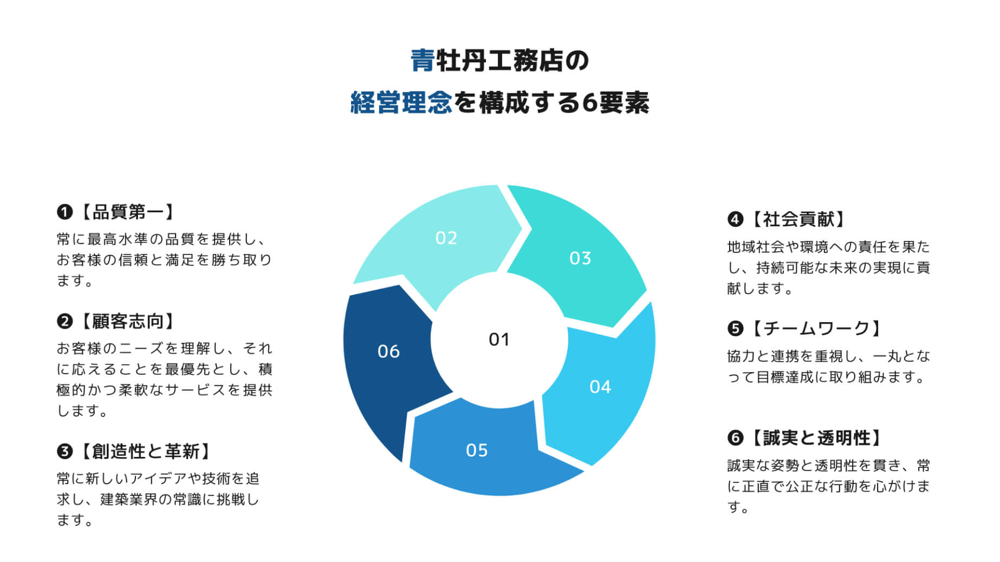

経営理念

会社概要
青牡丹工務店は、1965年に創業しました。当初は小さな地域の工務店として始まりましたが、顧客志向の高いサービスと品質へのこだわりが徐々に評判を高め、地域の信頼を得ることとなりました。
創業以来、私たちの経営理念は変わることなく、品質第一と顧客満足を常に追求することを掲げています。私たちは、建物を単なる建築物としてではなく、人々の生活や夢の実現の場として捉え、お客様の要望に応えるために最善の努力を惜しまず取り組んできました。
その結果、地域社会だけでなく、広く多くのお客様からの信頼を得て、業績を着実に拡大させてまいりました。途中で直面した困難や挑戦もありましたが、常に創造性と革新を重視し、チーム全体で協力し合いながら、克服してまいりました。
私たちの理念は、常に社会に貢献し、持続可能な未来を築くことにあります。地域社会や環境への配慮を大切にし、誠実な姿勢で仕事に取り組むことで、より良い社会を築いていくことを目指しています。
今後も、お客様の声に耳を傾けながら、さらなる成長と発展を目指し、青牡丹工務店は邁進してまいります。
代表取締役
谷垣周平
| 商号 | 株式会社 青牡丹工務店 |
|---|---|
| 創業 | 昭和40年5月3日 |
| 資本金 | 2000万円 |
| 従業員数 | 24人 |
| 営業種目 | 総合建設設計施工・不動産業・倉庫業・リフォーム工事 |
| 本社所在地 | 〒000-0000大阪府大阪市中央区北区南町5-6-7 |
| 代表取締役 | 谷垣周平 |
安全への取り組み
経営層による安全衛生巡視
経営層による安全衛生巡視は、当社の安全管理体制の中核を担う活動の一つです。この巡視では、経営者や上級管理職が定期的に現場を訪問し、安全な作業環境の確保や安全基準の遵守を徹底することが主な目的です。
具体的には、巡視の際には安全規則や法令の遵守状況を点検し、作業現場における危険な箇所や潜在的なリスクを特定します。また、機械や設備の安全装置が正しく機能しているかどうかも確認します。さらに、作業員に対して安全教育や指導を行い、安全意識の向上を図ります。
労働災害防止への取り組み・教育体制
労働災害の防止に向けた従業員への教育・訓練も欠かせません。新入社員や新規作業員には、安全教育プログラムを実施し、作業時の安全ルールや手順、危険な状況の認識方法などを徹底的に指導しています。さらに、定期的な安全講習会や研修を通じて、従業員の安全意識を高める取り組みを行っています。
労働災害が発生した場合には、速やかに原因究明を行い、再発防止策を迅速に実施します。また、従業員からの安全に関する意見や提案を積極的に受け付け、改善に向けた取り組みを推進しています。